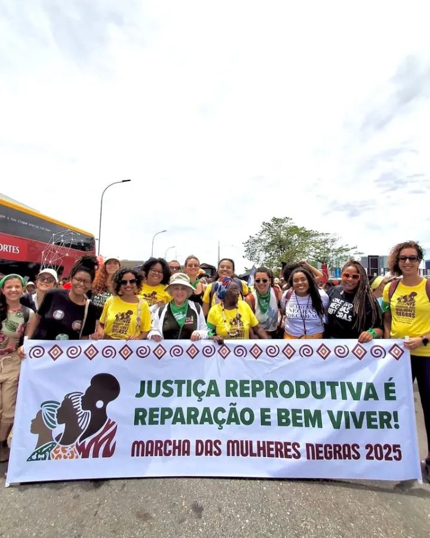
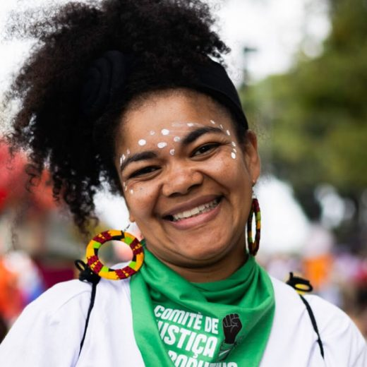
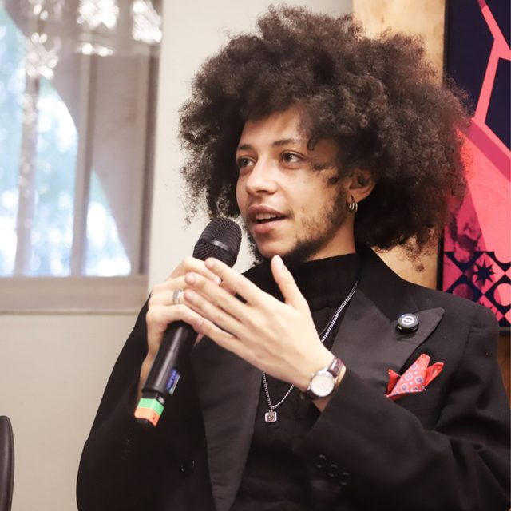

Feminismo negro
Somos uma organização feminista negra e interseccional. Partimos da experiência de mulheres negras, indígenas, quilombolas e periféricas, que vivem raça, gênero e classe ao mesmo tempo.
O Instituto de Justiça Reprodutiva é uma organização de direitos humanos que atua na defesa da saúde sexual e reprodutiva de mulheres negras e pessoas que gestam no Brasil.


Somos uma organização feminista negra de direitos humanos. Defendemos a saúde sexual e reprodutiva de mulheres negras e de todas as pessoas que gestam no Brasil, incluindo homens trans e pessoas não binárias.
Promover a justiça reprodutiva no Brasil, defendendo a saúde e os direitos sexuais e reprodutivos de mulheres negras e de todas as pessoas que gestam, por meio de pesquisa, incidência política, formação e comunicação, e enfrentando o racismo, o machismo, a transfobia e as desigualdades sociais e ambientais que atravessam nossos corpos e territórios.
Um Brasil onde todas as pessoas possam decidir se, quando e como ter filhos, e criá-los com dignidade, em territórios saudáveis, seguros e ambientalmente justos, com um SUS público, universal e antirracista e livres de racismo, violência e discriminação de gênero.
nossos compromissos
A justiça reprodutiva liga o direito ao próprio corpo às condições de vida. Por isso nossa atuação cruza seis frentes.
Somos uma organização feminista negra e interseccional. Partimos da experiência de mulheres negras, indígenas, quilombolas e periféricas, que vivem raça, gênero e classe ao mesmo tempo.
Justiça reprodutiva é para todas as pessoas que gestam. Defendemos a equidade de gênero e os direitos das pessoas trans, e incluímos homens trans, pessoas transmasculinas e não binárias na nossa linguagem, nas nossas pesquisas e nas políticas que defendemos.
A crise climática já afeta a saúde reprodutiva. Calor extremo, enchentes, falta de saneamento e insegurança alimentar atingem primeiro gestantes e crianças negras, indígenas e periféricas. Defendemos territórios saudáveis e a participação dessas comunidades nas decisões sobre clima.
Defendemos um SUS público, universal e antirracista, a Política Nacional de Saúde Integral da População Negra e o enfrentamento da mortalidade materna evitável e da violência obstétrica.
Nosso trabalho se apoia nos marcos de direitos humanos: a Conferência do Cairo (1994), a Plataforma de Pequim (1995), a Convenção CEDAW e a decisão da ONU no caso Alyne Pimentel.
O racismo estrutura as desigualdades na saúde. Somamos à luta por reparação e bem viver construída pela Marcha das Mulheres Negras.
o que é justiça reprodutiva
O conceito foi criado em 1994 por mulheres negras, que perceberam que falar só em "direito de escolha" deixava de fora quem não tem acesso a saúde, renda, moradia ou segurança. Ele reúne quatro direitos que não se separam.
Acesso a informação, contracepção e aborto nos casos previstos em lei, sem julgamento nem barreiras.
Pré-natal, parto respeitoso e cuidado no pós-parto. Fim da esterilização forçada e da violência obstétrica.
Criar filhos em territórios seguros, com escola, creche, saneamento, renda e sem violência de Estado.
Decidir sobre o próprio corpo, a sexualidade e a forma de família, com respeito a todas as identidades.
acesso a direitos sexuais e reprodutivos
Lutamos pela garantia e ampliação dos direitos sexuais e reprodutivos no Brasil.
Produção e divulgação de dados sobre saúde reprodutiva, mortalidade materna e racismo.
Diálogo com o poder público e acompanhamento de leis e decisões que afetam a vida reprodutiva.
Rodas e oficinas com comunidades, profissionais de saúde e lideranças nos territórios.
Materiais em linguagem simples sobre direitos, serviços e caminhos para buscar ajuda.
Documentos que construímos junto com o movimento de mulheres negras e de pessoas transmasculinas. Leia online ou baixe em PDF.

Comitê de Justiça Reprodutiva rumo à Marcha das Mulheres Negras · Marcha Nacional de Mulheres Negras 2025
Lançado na Marcha das Mulheres Negras de 2025, em Brasília, o manifesto reúne as violações vividas por mulheres negras na saúde reprodutiva e consolida uma agenda política nacional por justiça reprodutiva.

Organização: Aron Giovanni Oliveira e Fabiana Pinto · Liga Transmasculina João W. Nery
Primeiro dossiê nacional sobre a saúde reprodutiva de homens trans e pessoas transmasculinas negras e periféricas, com dados sobre violações e propostas de políticas públicas.
Conversas sobre justiça reprodutiva, saúde e o movimento de mulheres negras. Toque na capa para ouvir.
O trabalho do Instituto e de sua equipe na imprensa, da matéria mais recente para a mais antiga.
Quer construir uma parceria, convidar o Instituto para uma atividade, falar com a imprensa ou somar na luta? Mande sua mensagem.
Somos uma organização feminista negra de direitos humanos que atua na defesa da saúde sexual e reprodutiva de mulheres negras e pessoas que gestam no Brasil.
Diretora Executiva

Diretor de Estratégia
Diretora Financeira